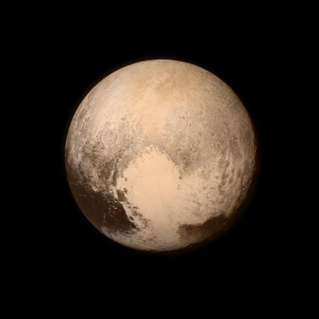
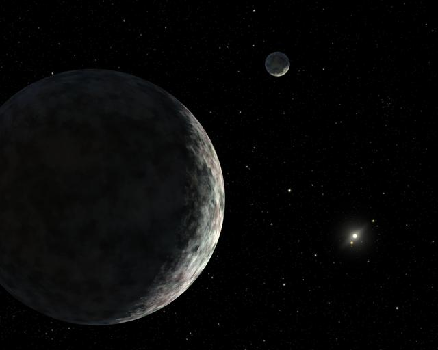

Dwarf Planets
Pluto, Haumea, Ceres, and Eris are small, round worlds that orbit the Sun but share their neighborhoods with other objects.
In 2006, the International Astronomical Union defined a dwarf planet as a round body that orbits the Sun, is not a moon, and has not cleared other objects from its orbit. Five worlds are officially recognized: these four and Makemake. Most live in the Kuiper Belt beyond Neptune, but Ceres orbits in the asteroid belt between Mars and Jupiter.
Choose a dwarf planet below to see its facts, or use the table at the bottom of the page to compare all four.
Choose a Dwarf Planet
-

Pluto
The most famous dwarf planet, with a heart-shaped region of nitrogen ice and five moons.
-

Haumea
A football-shaped world that spins once every four hours and has a ring and two moons.
-

Ceres
The largest object in the asteroid belt, with mysterious bright spots made of salt.
-

Eris
The most massive dwarf planet, so far out that sunlight takes more than nine hours to reach it.